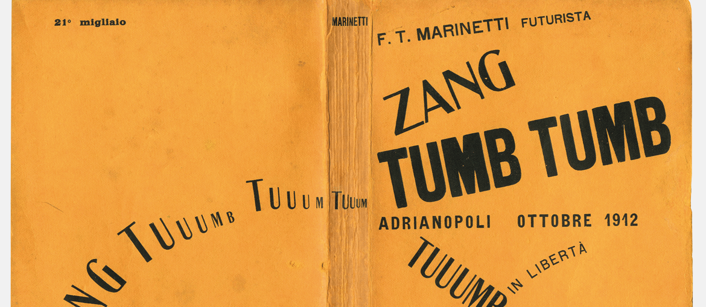

match different word endings without using the encoding (tags for part of speech)
match a string composed by different words making sure that it matches also different word endings and each combination
So far I solved this two problems by an if else that first checks if the world is single or composed by more (using the split of spaces and punctuation) and then for each word add the regular expression to find that word in each declination inside the text. All those single matches will compose a unique string match so all the words if inserted together will be searched and found together.
Another problem that I had was that when I first wrote the jQuery function to insert the article inside the html file, I included also the head of the article. This means that when I searched for regular expressions inside the article it founded also the matches inside the metadata but it gave problems since when I wanted to substitute or show them differently counts were different since metadata are not shown.
For what concern the handling of the different articles, I decided to have an external json with the uploaded list of the articles. Once the document is loaded it retrieves automatically all the articles and the relatives link, in this way it is easier to upload them (since it is just necessary to add them to the json)
Some issues of the regular expressions:
They don't distinguish between nouns and verbs (for example if yo search "change" (il cambiamento) it will found also "changing"). This brings also to the fact that little words as 'at' found 'as'. To avoid it there is the need of an nltk
Till now you can find the -ing form only if you start from the base form (for ex. from "move" you find "moving" from "moved" not).
Another problem was that it matched also the words inside the alt attribute of the images. In order to avoid it I added the (?!<=") look behind but it still matches them when the word inside the attribute is not immediatly near the ".
The count is done two times because the first time we find all the occurrences, so it is case insensitive, the second time we manage the occurrences with a span, so we do the match again this time for the exact occurrence (both case insensitive and according to the different suffixes. A problem is that in the first match we do this against the articles text that is without tags. The second time we act against the article content so it matches also the tags.
Another problem is that the addnewmetadata function is not called when changing the article, just the addkeywordstobox. This means both that:
New matches won't be found: if I have the form moves in an article and only moved in another article there won't be this word inside the local storage so it won't match
Single occurrences could never be changed since there is not a reliable list but just the old one taken from the local storage. The count instead can change since it is the only thing I redo
The best solution is to put the code of the matching pattern in another function, so it can be called both by addnewmetadata and by addfromlocalstorage. The main change will be that it will have a generic list in input that can be both the input list (if it comes from a user input) and the list of uniqueMatches if it comes from the addfromlocalstorage. In this way, even if it has already the main matches it will search for additional combinations and the singleoccurrences function will have reliable data.
In order to work properly, when the matches are 0, it should save the input, so once it goes in the other article it automatically search again the input. But I think it's not a big deal that the user search again the word in another text, if he/she is intersted in it, I mean it is pretty authomatic.
Differnt kind of issues
Metadata
I first putted the label "People" on metadata since I thought that it could be interesting to have a view and an access to informational pages about people involved in the single article. However as soon as I started to encode this information by HTML, I found out a problem: should groups and organizations must be considered people? In general those figures are called actors, but since we are building up a megazine, I think it is a good idea to keep it readible and easy to access. So I have two options: create another box, so I have one for people and one for organizations (funny fuct: I will have, for ex., the label US both in organizations and places since it is used both to state that the nation did something and that events took place in that nation), or to create a single box but with a more meaningful name, that I think it is the best solution.
Metadata are organized as follows:
There is the info box with title, author, date of publication and maybe argument.
Near there is the box of the keywords that can be freely added
Then there is probably an accordion with people, organizations, places, events and references:
People: just every person that is cited
Organizations: a label decided for agents that are not a specific person (organizations, fundations, but for ex. also States if they are considered as the rulers or as living entities) as well as laboratories and research points, which is not appropriate to refer to as places
Places: just the cited places that can be cities or states etc.
Events: specific events, but not necessarily in a short time (for ex. are considered events also the causes against the court)
References: every reference to an act, an article that are not contained or cannot be considered bibliography, it acts kind of an 'other' section
What all those sections have in common is the fact that they will contain only official labels. For this reason, sometimes if a reference to one of this categories is too generic (for ex. the court for the Supreme Court) this won't be added, since it happens when it is near an already extended citations. For the computer it is difficult to understand that the Supreme Court and the court are the same in that context, for the human being it is simple, that's why we use those abbreviations also in official texts. So I think that since those are articles, for the informative aim it is enough to retrieve all the officials labels (unambiguous ones) and to allow the user to jump where they occur. If nearby there is a non-official referement I am sure the user will see it while reading.
General organization
Nav
Metadata section
Forms for metadata
List with links to articles
Floating action button (FAB) to change style
Styles
Futurism
Sans-serif
Deconstruction of space: rectangles, triangles, ellipses
3D and time shown
Variation in type size
Machine-inspired
Clear intentional ratio: 1:2 (50% - 100%), 2:3 (66,7% - 100%) , 5:8 (62,5% - 100%), 5:9 (55,5% - 100%) (all approximations of the golden ration, made by?). We will use 5:8 and 1:2 since they are the less approximated.
The background color (#e69737) of the aside is taken from the Zang Tumb Tumb (1914) by Filippo Tommaso Marinetti:
